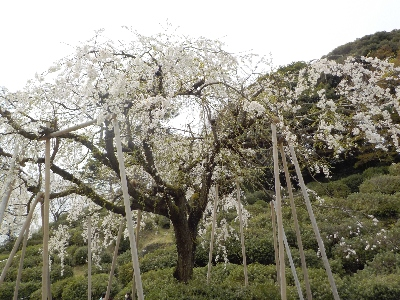
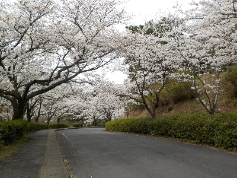
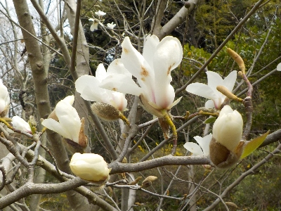
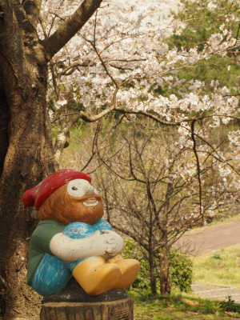
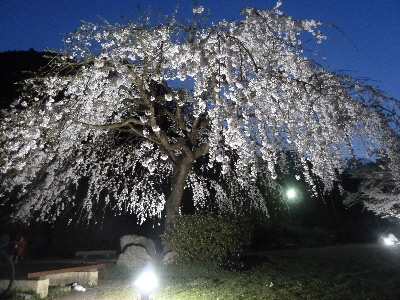
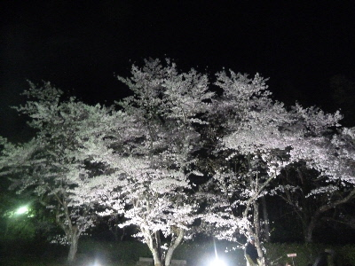
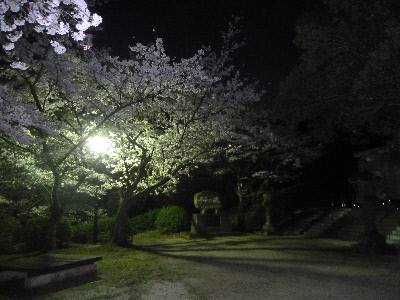
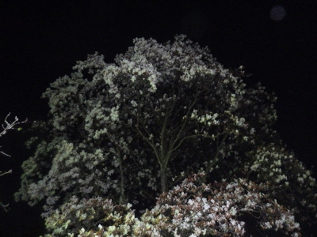
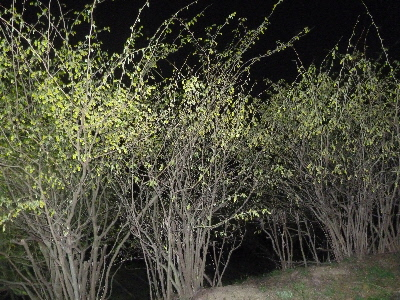

島根県出雲市斐川町直江3864-2
更新日 : 2025/04/05

ちょっと緑色がありましたが、十分キレイでした。

今回はこの場所が一番良かったと思いました。
ソメイヨシノは花が一斉に咲くからいいんですが、一斉に咲いていませんでした。咲いてなかったり葉っぱがあったりです。そもそも花数が少ない気もする。
ここに限ったことじゃないですが、木が弱っているものが増えてる感じがします。

モクレンは散ってるものが多いですが、まだツボミもありました。
更新日 : 2023/03/29

斐川公園といえばこの人ですね。
更新日 : 2018/03/31
夜桜を見に斐川公園に行きました。

広場の真ん中にライトアップされた枝垂れ桜がありました。
「おー素晴らしい！」この公園にこんな立派な桜があるとは知らなかったです。

ソメイヨシノのライトアップも綺麗でした。明かりが強いのかな。

公園の上の方は通常の照明の明かりだけですが、これはこれで落ち着いてていい雰囲気でした。
私が歩いたときは誰もいなかったので貸切で楽しめました。

モクレンの大きな木があったんですが、これはもう終わりかけでした。
もうちょっと早かったら綺麗だったんだろうなー。

桜以外の花も見れました。昼とは違う色合いでした。
展望広場に座ってる小人（？）がいました。公園を見守っているのかな。
【おいしいものを食べよう。】【たくさん寝よう。】
【ソロ活をしよう!】【季節感のあることをしよう。】【動画視聴はほどほどに。】【当サイトの全てのコンテンツは無断転載禁止です。】